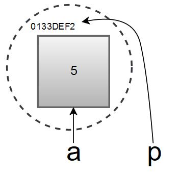
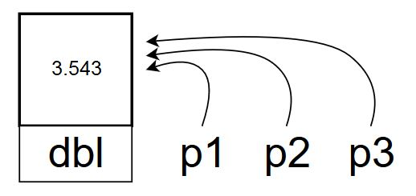
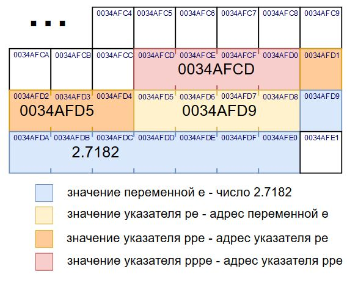
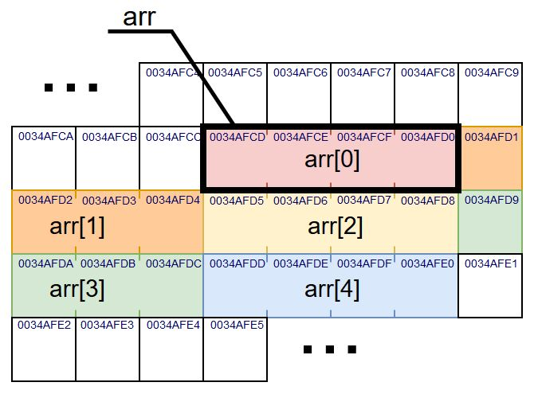
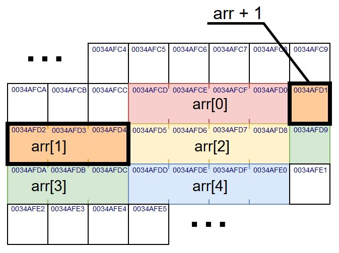
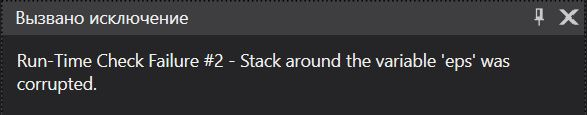

Основы алгоритмизации и программирования
Квантовая механика мира программирования, или
Работа с указателями
Содержание лекции
Указатели
Указатель – это объект, значением которого служит адрес другого объекта (переменной, константы, другого указателя) или функций.
Объявление указателя
Формат объявления указателя:спецификатор_типа* идентификатор
Спецификатор_типа задает тип объекта и может быть любого основного типа, типа структуры или void.
char *pz; // указатель на char
int *pk, *pi; // указатели на int
float *pf; // указатель на float
Тип указателя должен однозначно соответствовать типу значения, на адрес которого он указывает.
int name1 = 555;
int* pnm1;
float *pnm2;
char * pnm3;
pnm1 = &name1; // работает
pnm2 = &name1; // ошибка
pnm3 = (char*)&name1; // работает
Память компьютера
Память компьютера состоит из огромного количества байт. У каждого байта в памяти есть свой уникальный адрес (номер).
int main()
{
return 0;
}
Переменная в памяти
int main()
{
int num;
// вывод адреса num
printf("%p \n", &num);
// 0133FDBD
return 0;
}
Вторая переменная
int main()
{
int num;
int* p1 = #
// 0133FDBD
double big = 12.562;
double* p2 = &big;
// 0133FDB5
return 0;
}

И еще массив
int main()
{
int num;
int* p1 = #
// 0133FDBD
double big = 12.562;
double* p2 = &big;
// 0133FDB5
char str[10] = "avial";
char* p3 = str;
// 0133FDAB
return 0;
}
Ещё раз
Обычные переменные хранят значения.
Указатели хранят адреса этих значений.
char sy = '%';
cout << sy << endl; // Выведет %
char* pointer = &sy;
cout << pointer << endl; // Выведет шестнадцатеричную ерунду
int name = 42;
cout << name << endl; // Выведет ответ на главный вопрос жизни, вселенной и всего такого
int* ptr = &name;
cout << ptr << endl; // Выведет шестнадцатеричную ерунду
Как вывести значение по указателю?
Ответ - операция разыменования.
Разыменование, или косвенная адресация - получение переменной не напрямую, а через указатель, содержащий адрес этой переменной.
Обращение с переменной через указатель с её адресом равносильно обращению с самой переменной. Т.е. допускается перезапись и изменение значения.
Указатель
По факту, переменная и указатель на эту переменную обращается к одной и той же памяти, к одному и тому же значению.
Меняя значение по указателю, изменится значение и переменной. Аналогично, меняя значение в переменной, по указателю будет уже новое изменённое значение.
Использование разыменованного указателя
int x = 10;
int *p = &x;
printf("Address = %p \n", p);
printf("x = %d \n", *p);
*p += 1;
printf("Address = %p \n", p); // адрес не изменится
printf("x = %d \n", *p); // 11
printf("x = %d \n", x); // 11
x /= 2;
printf("x = %d \n", *p); // 5
printf("x = %d \n", x); // 5
* и &
Операция разыменования * в некотором смысле является обратной операции получения адреса &.
int eger = 27;
int* ptr = &eger;
int b = *ptr; // b = 27
int c = *&b; // c = b = 27
bool isr = &*ptr == &*&eger; // true
bool isr = &*ptr == &*&c; // false
Пример
char c = 'N';
int d = 10;
short s = 2;
char *pc = &c; // получаем адрес переменной с типа char
int *pd = &d; // получаем адрес переменной d типа int
short *ps = &s; // получаем адрес переменной s типа short
printf("Variable c: address=%p \t value=%c \n", pc, *pc);
printf("Variable d: address=%p \t value=%d \n", pd, *pd);
printf("Variable s: address=%p \t value=%hd \n", ps, *ps);
return 0;
Пример 2

double dbl = 6273e+25;
double* p1 = &dbl;
double* p2 = p1;
dbl = 33.543;
double* p3 = &dbl;
*p2 -= 30;
cout << dbl << " : " << *p1 << " : "
<< *p2 << " : " << *p3 << endl;
Указатель в никуда
Использование неинициализированных указателей опасно (можно перезаписать произвольную память). Объявляя указатель, необходимо инициализировать его адресом определенной переменной или нулем.
Поэтому в C++ существует специальное ключевое слово nullptr, для обозначения пустого указателя (или устаревший вариант, NULL).
int *pm = nullptr; // указатель, не указывающий ни на что
...
if (pm == nullptr)
cout << endl << "Нулевой указатель" << endl;
Ссылки
Ссылка - объект, ссылающийся на другую переменную.
Формат объявления ссылки:спецификатор_типа& идентификатор
При изменении ссылки изменения будут отражаться и на исходной переменной.
Переменная и ссылки на неё - два имени одного и того же объекта в памяти.
Ссылки
Ссылка всегда должна ссылаться на существующую переменную.
short int g = 13;
short int * pointer = &g; // Указатель на g
short int & reference = g; // Ссылка на g
short int b = g; // Копия g
cout << "Переменная: " << g << endl; // 13
cout << "Указатель: " << pointer << endl; // 043D3EA2
cout << "Ссылка: " << reference << endl; // 13
cout << "Копия: " << b << endl; // 13
++g;
cout << "Переменная: " << g << endl; // 14
cout << "Разыменованный указатель: " << pointer << endl; // 14
cout << "Ссылка: " << reference << endl; // 14
cout << "Копия: " << b << endl; // 13
++reference;
cout << "Переменная: " << g << endl; // 15
cout << "Разыменованный указатель: " << pointer << endl; // 15
cout << "Ссылка: " << reference << endl; // 15
cout << "Копия: " << b << endl; // 13
++*pointer;
cout << "Переменная: " << g << endl; // 16
cout << "Разыменованный указатель: " << pointer << endl; // 16
cout << "Ссылка: " << reference << endl; // 16
cout << "Копия: " << b << endl; // 13
g = nullptr; // ошибка
pointer = nullptr; // pointer больше не указывает на g
reference = nullptr; // ошибка
b = nullptr; // ошибка
Операции над указателями
Указатели можно использовать в следующих операциях:
- Присваивание (=)
- Разыменование (*)
- Взятие адреса (&)
- Сравнения (==, !=, <, >, <=, >=)
- Некоторая арифметика (+, -, ++, --)
Присваивание
Указателю можно присвоить адрес любого объекта в памяти, или специальные адреса nullptr и NULL.
Числа присваивать нельзя (без явного приведения к типу указателя).
char symb = '=';
char t;
int kk = -13;
char* pc = &symb;
pc = &t;
pc = &kk; // ошибка
printf("%p", &kk); // 006FFB90
int *ptr_i = 0x006FFB90; // ошибка
ptr_i = (int*)0x006FFB90;
printf("%d", *ptr_i); // -13
Разыменование
Разыменование - специальная операция, применимая только к указателям.
Её примеров мы уже насмотрелись.
Взятие адреса
Да-да. У указателя тоже есть адрес.
Указатель хранит адрес переменной. Хранит. Значит хранит где-то, а где же еще, кроме как в памяти.
Указатель на переменную занимает в памяти 2, 4 или 8 байтов. 2 байта на 16 битных системах, 4 на 32 битных и 8 на 64 битных.
Размер указателя на функцию может достигать 24 байт.
Адрес указателя
int num = 888;
int* pn = #
printf("%d", *pn); // Значение переменной
printf("%p", pn); // Указатель - адрес переменной
printf("%p", &pn); // Адрес указателя
printf("%p", &&num); // Ошибка - у адреса нет адреса
Дополним пример с памятью
int main()
{
int num;
int* p1 = #
// &num = 0133FDBD
// &p1 = 0133FDB9
double big = 12.562;
double* p2 = &big;
// &big = 0133FDB1
// &p2 = 0133FDAD
char str[10] = "avial";
char* p3 = str;
// &str = 0133FDA3
// &p3 = 0133FD9F
return 0;
}
Указатели на указатели на указатели на указатели...
Раз у указателя есть адрес, то можно сделать указатель на указатель.
float e = 2.7182;
float* pe = &e;
float** ppe = &pe;
float*** pppe = &ppe;
printf("Вещественное число e: %f", e);
printf("Через указатель : %f", *pe);
printf("Через указатель на указатель : %f", **pe);
printf("Через указатель на указатель на указатель : %f", ***pe);
Как правило, такие конструкции применяются при работе с многомерными массивами.
Пояснение
Операции сравнения
Указатели можно сравнивать между собой всеми доступными операторами сравнения (==, !=, <, >, <=, >=).
Сравниваться будут значения адресов, записанных в указателях, как простые числа.
Сравнение указателей бывает полезно при работе с массивами.
Примеры сравнений
int a = 3;
int b = 17;
int* pa = &a; // 003FF47A
int* pb = &b; // 003FF471
bool b1 = (a < b); // true
bool b2 = (pa < pb); // false
int mas[2] = { 14, -234 };
pa = &mas[0];
pb = &mas[1];
if (pa > pb)
{
printf("%d идёт после %d", *pa, *pb);
}
else
{
printf("%d идёт после %d", *pb, *pa);
}
Арифметика указателей
К указателям можно прибавлять значения, и отнимать значения. Т.е. доступны операции + и -, а также их сокращённые формы +=, -=, ++ и --.
В качестве вторых операндов могут выступать целые числа и другие указатели.
В результате операций изменяется адрес, на который указывает указатель.
Особенности вычислений
Но эти операции выполняются по особенному, не так как с обычными числами.
При добавлении к указателю числа N, адрес смещается на расстояние в N элементов типа указателя.
При прибавлении адрес увеличивается, при вычитании уменьшается.
Типы указателей
Если указатель указывает на тип int, то прибавление к адресу 1 увеличит его на 4 байта
Для типа char адрес увеличится на 1 байт.
Для типа double на 8.
И т.д.
Пример адресной арифметики
int eps = 1243;
int* pp = &eps; // 00E1F442
pp += 1; // 00E1F442 + 4 = 00E1F446
pp += 3; // 00E1F446 + C = 00E1F452
char ch = 'F';
char* pch = &ch; // 00E1F320
++pch; // 00E1F320 + 1 = 00E1F321
short int shi = 874;
short int* pshi = &shi; // 00E1F2F4
pshi = pshi - 4; // 00E1F2F4 - 8 = 00E1F2EC
Схема смещения указателя на int
int a = 423;
int *pa = &a;
for (int i = 0; i < 6; ++i)
{
cout << pa << endl;
++pa;
}
Схема смещения указателя на double
int num = 7;
double db_val = 5e+8;
double *pd = &db_val;
for (int i = 0; i < 4; ++i)
{
cout << pd << endl;
++pd;
}
Разность указателей
От одного указателя можно отнять другой указатель, чтобы получить разницу их адресов.
Разница высчитывается в количестве элементов типа указателя.
int ek = 3; // 00FFAA10
int et = 45; // 00FFAA20
int* pek = &ek;
int* pet = &et;
cout << pek - pet << endl; // 4
double dy = 54.3; // 00FFAA10
double dx; // 00FFAA20
double* pdy = &dy;
double* pdx = &dx;
cout << pdy - pdx << endl; // 2
Вычитание указателей
Адреса нельзя складывать.
Можно вычитать только указатели на одинаковые типы.
char chap;
bool bip;
char* pach = &chap;
bool* pub = &bip;
bool* pub2 = &pub2;
pach - pub; // Ошибка
pub + pub2; // Ошибка
cout << Разница в памяти между элементами составляет " << pub - pub2 << " байт.\n";
Указатели и массивы
Элементы массива располагаются в памяти строго последовательно.
int arr[5];
Имя массива
На самом деле, имя массива - это указатель на его нулевой элемент.
Поэтому нельзя получить адрес массива оператором &.
int mas[2] = { 1, 2 };
cout << mas << endl; // Выведет адрес нулевого элемента массива
cout << *mas << endl; // Значение нулевого элемент массива - 1
// Т.е.
mas[0] == *mas;
&mas[0] == mas;
// Тогда как получить доступ к mas[1]?
mas[1] = ??
Нулевой элемент
Первый элемент
Адресация элементов массива
double mass[4] = { 4.3, 0.1, -34.2, 6.31, 3.0 };
cout << "0. Адрес: " << mass << " Значение: " << *mass << endl;
cout << "1. Адрес: " << mass + 1 << " Значение: " << *(mass + 1) << endl;
cout << "2. Адрес: " << mass + 2 << " Значение: " << *(mass + 2) << endl;
cout << "3. Адрес: " << mass + 3 << " Значение: " << *(mass + 3) << endl;
short arr[3] = { 4, 12, 7 };
int a = *arr + 1;
*(arr + 1) = a;
// arr = { 4, 5, 7 }
Перебор элементов массива через указатель
const int sz = 20;
char mas[sz] = "abcdefghjklmnopqrst";
for (char* cur = mas; cur < mas + sz; ++cur)
{
printf("%c\n", *cur);
// cur -- адрес текущего элемента массива
// *cur -- его значение
}
Пример
int arr[100];
int rmax = 10;
int rmin = 10;
int array_size;
cout << "Введите размер массива" << endl;
cin >> array_size;
srand(time(0));
for (int i = 0; i < array_size; ++i)
{
*(arr + i) = rand() % rmax - rmin;
cout << *(arr + i) << endl;
}
int avg = 0;
for (int* tmp = arr; tmp < arr + 100; ++tmp)
{
avg += *tmp;
}
avg /= array_size;
cout << "Средний элемент массива: " << avg << endl;
Неизменный указатель
Хоть имя массива и является указателем, его нельзя изменять.
int mas[10];
mas++; // Ошибка
mas = &mas[4]; // Ошибка
Это потому, что имя массива - константный указатель.
Константные указатели
Для объявления константного указателя необходимо приписать ключевое слово const после звёздочки.
тип* const имя = &переменная;
Константный указатель всегда указывает на один и тот же адрес, его нельзя перезаписать.
Константный указатель нельзя объявить без инициализации.
float ff = 23.4f;
float f2 = -3.7f;
float* const pf; // Ошибка
float* const pf = &ff;
pf = &f2; // Ошибка
Указатель на константу
Для объявления указателя на константу необходимо приписать ключевое слово const перед типом указателя.
const тип* имя;
Указатель на константу не позволяет изменять значение в той ячейке памяти, на которую он указывает. Но адрес указателя менять можно.
Различия
int a = 2;
int b = 5;
// Константный указатель
int* const pc = &a;
*pc = 10; // можно
pc = &b; // нельзя
// Указатель на константу
const int* cp;
cp = &a; // можно
*cp = -2; // нельзя
cp = &b; // можно
++(*cp); // нельзя
cp = nullptr;
// Константный указатель на константу
const short* const pname = &a;
Передача указателя в функцию
Указатель, как обычная переменная, может быть передан в аргумент функции.
void some_function(char* pointer);
При передаче массива в функцию передаётся указатель на его нулевой элемент. Поэтому для таких массивов перестаёт работать функция sizeof() - программа воспринимает массив просто как указатель.
Пример передачи массива
bool swap(int* mas, int first, int second)
{
int temp = mas[first];
mas[first] = mas[second];
mas[second] = temp;
}
int main()
{
int a[10] = { 1, 2, 3, 4, 5, 6, 7, 8, 9, 10 };
swap(a, 1, 5);
swap(a, 1, 9);
// a = { 1, 10, 3, 4, 5, 2, 7, 8, 9, 6 };
}
Возврат указателя
Указатели также могут выступать возвращаемыми значениями функций.
float* function_name(float* arg)
{
// ...
return arg;
}
Нельзя возвращать указатели на локальные переменные, созданные внутри функции.
Почему же, почему
Локальные переменные существуют только в рамках своей функции. Если в функции объявить указатель на локальную переменную, то внутри неё по адресу указателя будет находиться значение этой переменной. Но после завершения функции переменная перестанет существовать, а возвращённый указатель будет продолжать ссылаться на её адрес.
Пример
Иногда это не будет работать:
float* get_average(int* mas, int size)
{
float avg = 0;
float* pavg = &avg;
for (int* current = mas; current < mas + size; ++current)
{
*pavg += (float)*current; // равнозначено *(float*)current
}
*pavg /= (float)size;
return pavg;
}
int main()
{
setlocale(LC_ALL, "rus");
int arr[5] = { 1, 2, 3, 4, 5 };
float* pa = get_average(arr, sizeof(arr) / sizeof(int));
*pa *= 2;
cout << *pa << endl; // 0, а может быть 6, а может и ещё что-то
return 0;
}
Как можно разрешить подобную ситуацию
Одним из вариантов решения подобной ситуации заключается в использовании параметра для возврата значения.
void get_average(int* mas, int size, float* ret_avg)
{
*ret_avg = 0;
for (int* current = mas; current < mas + size; ++current)
{
*ret_avg += (float)*current; // равнозначено *(float*)current
}
*ret_avg /= (float)size;
}
int main()
{
setlocale(LC_ALL, "rus");
int arr[5] = { 1, 2, 3, 4, 5 };
float pa;
get_average(arr, 5, &pa);
pa *= 2;
cout << pa << endl; // 6
return 0;
}
Указатели опасны
Лезвие ножа
С одной стороны, указатели - невероятно мощный механизм, позволяющий при правильной эксплуатации эффективно использовать память компьютера и вытворять с ней такие хитрые выкрутасы, что производительность вырастает в разы.
Но вместе с тем использование указателей значительно увеличивает шансы "выстрелить себе в колено".
Любой неверный шаг в сторону - обращение не по тому адресу в памяти, может привести к поломке программы.
Ошибки при работе с указателями
Универсальный способ сломать программу с помощью указателей - записать значение туда, где ему быть не положено.
char a;
char* pa = &a;
pa += 3;
*pa = 2;
Итого, стек вызова повреждён:
